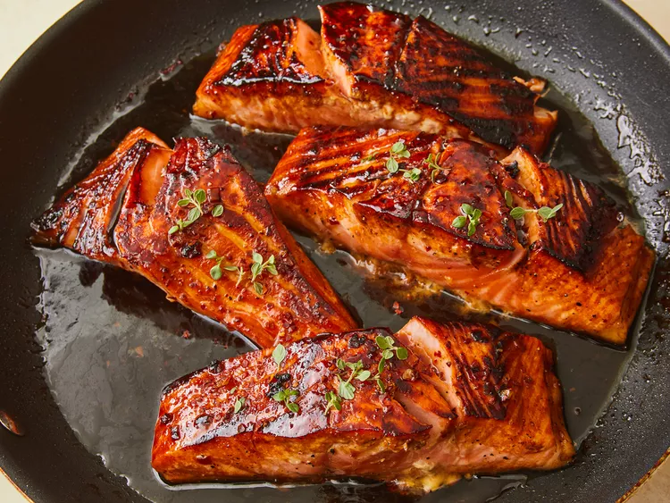

Honey Glazed Salmon
This salmon glaze recipe makes the most delicious salmon. It's easy to
prepare and very refreshing.

Prep time: 15 mins
Cook Time: 10 mins
Additional Time: 1 hr
Total Time: 1 hr 20 mins
Ingredients
- 3/4 teaspoon olive oil
- 1 clove garlic, minced
- 1/3 cup honey
- 1/2 lemon, juiced
- 1/4 teaspoon sea salt
- 1/4 teaspoon ground black pepper
- 4 (6 once) filets salmon
- 1 tablespoon olive oil
Directions
-
Heat 1/4 teaspoon olive oil in a small skillet over medium-high heat.
Sauté garlic in hot oil until just beginning to brown.
-
Mix together sautéed garlic, soy sauce, lemon juice, honey, 1/2 teaspoon
olive oil, sea salt, black pepper, and red pepper flakes in a bowl; pour
into a large resealable plastic bag. Add salmon fillets to the bag,
turning to coat with marinade, squeeze to remove excess air, and seal
the bag. Marinate in the refrigerator for 1 hour.
-
Remove salmon from the marinade and shake to remove excess liquid.
Reserve 3 tablespoons marinade and discard remainder.
-
Heat 1 tablespoon olive oil in a large skillet over medium heat. Arrange
salmon fillets in the hot skillet; pour reserved marinade over salmon.
-
Cover and cook, occasionally spooning liquid in the pan over fillets,
until salmon is browned and flakes easily with a fork, 2 to 3 minutes
per side. Garnish salmon with sea salt and black pepper.